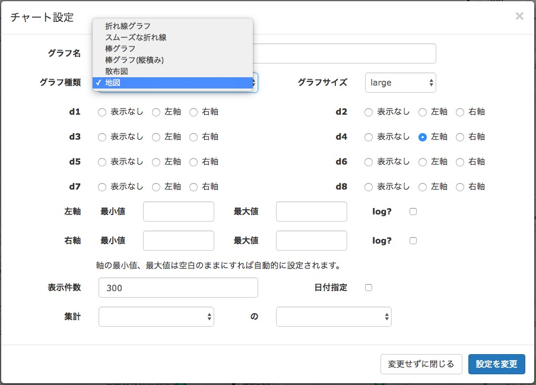

「AmbientでIoTをはじめよう」の第5回は、GPSモジュールを使い、 いろいろな場所のデータを測定して、クラウドに送信し、記録し、確認する事例を紹介します。
センサデータにはいつどこで測定したデータかという情報が付帯しています。
第1回の温度、湿度や第2回の空気品質の事例は、時間とともに温度や空気品質がどう変化したかを測定、記録したものです。 場所については触れていませんが、一つの場所で測定したデータであることを仮定しています。データは次のような形式になります。
t1, d1=23.57, d2=44.45
t2, d1=23.78, d2=43.96
t3, d1=23.87, d2=43.87
一方、場所と時間を変えながら測定されるデータもあります。例えば場所ごとの騒音レベルやCO2濃度などは場所に応じたデータです。 また、サイクリングした時の位置と時刻と心拍数、ペダルの回転数は位置と時刻に応じたデータです。
データは次のように、緯度経度で表される位置情報がついた形式になります。
t1, d1=23.57, d2=44.45, 緯度=35.64, 経度=139.62
t2, d1=23.78, d2=43.96, 緯度=35.62, 経度=139.60
t3, d1=23.87, d2=43.87, 緯度=35.63, 経度=139.61
今回は、いろいろな場所の空気品質を測定し、クラウドに送って、記録、可視化する事例を紹介します。
センサ端末は第2回「空気品質を測定し、記録する」で開発した端末と同じものに、 位置を調べるためにGPSモジュールを加えます。端末を持ち運べるように、電池駆動にします。
クラウドにデータを送信するためにモバイルWi-Fiルータを使い、センサ端末を持ち運び可能にします。 スマートフォンのテザリング機能を使っても構いません。
第2回「空気品質を測定し、記録する」で開発した端末と同じく、マイコンはESPr Developerを、 センサは温湿度・気圧センサBME280と空気品質センサCCS811を使います。 BME280はI2CとSPIという二つのインタフェースに対応していますが、CCS811がI2Cインタフェースのみに対応なので、 両方合わせてI2Cでアクセスします。
GPSモジュールは「Adafruit Ultimate 66チャンネル10Hz GPSモジュール Version 3」を使います。 66チャンネルというのは66個のGPS衛星をサーチし、22個の衛星をトラッキングできるのだそうです。 アンテナは内蔵されていて、外部アンテナをつけることもできます。 このGPSモジュールはシリアル通信でアクセスします。 ESPr Developerに使われているESP8266にはシリアル通信モジュールが一つの搭載されていますが、 それはPCとの通信やプログラムのダウンロードに使われていて、アプリケーションでは使えません。 そこで、プログラムでシリアル通信を実現するライブラリーを使い、PCと通信しているのとは別のピンでシリアル通信します。 今回はピン12と2を使い、次のようにGPSモジュールと接続します。
| GPSモジュール | ESP8266など |
|---|---|
| 3.3v | - |
| EN | 10kΩでプルアップ |
| VBAT | 3.3v |
| FIX | - |
| TX | IO2 |
| RX | IO12 |
| GND | GND |
| VIN | 3.3v |
| PPS | - |
回路図を示します。
ブレッドボード上に組み立てた実際の端末です。 ESPr Developerは面積がコンパクトなので、ブレッドボードが有効に使えます。
端末に必要な部品をまとめました。
| 部品 | 個数 |
|---|---|
| Adafruit Ultimate 66チャンネル10Hz GPSモジュール Version 3 | 1個 |
| CCS811搭載 空気品質センサモジュール | 1個 |
| BME280搭載 温湿度・気圧センサモジュール | 1個 |
| ESPr® Developer (ESP-WROOM-02開発ボード) | 1個 |
| 細いピンヘッダ 20P | 2個 |
| 普通のブレッドボード | 1個 |
| 固いジャンパワイヤ (ブレッドボード用) | 1個 |
Arduino開発環境の準備とAmbientライブラリのインストールについては第1回「 温度、湿度、気圧を測定し、記録する」 の「Arduino開発環境の準備」と「Ambientライブラリとサンプルプログラムのインストール」をご覧ください。
温湿度・気圧センサBME280と空気品質センサCCS811の動作確認は第2回「 空気品質を測定し、記録する」 の「センサ端末の動作確認」をご覧ください。
プログラムでシリアル通信を実現するライブラリーは「 EspSoftwareSerial」を使いました。 Githubのページ右上の 「Clone or download」から「Download ZIP」を選んでZIPファイルをダウンロードし、Arduino IDEを立ち上げて、 「スケッチ」メニューの「ライブラリをインクルード」→「.ZIP形式のライブラリをインストール…」 でダウンロードしたZIPファイルを選択すればインストールは完了です。
簡単なプログラムを動かして、GPSモジュールの動作確認をします。
プログラムをビルドして、ESPr Developerに書き込むと、次のような文字列が出力されます。 文字列の内容はGPS衛星から受信するデータにより異なります。
GPS test
$GPGGA,034836.000,3538.5838,N,13937.5787,E,1,05,2.92,64.9,M,39.4,M,,*56
$GPGSA,A,3,14,27,32,193,26,,,,,,,,3.07,2.92,0.96*3E
$GPGSV,3,1,11,26,64,316,30,14,43,191,25,16,42,274,,29,33,046,19*77
$GPGSV,3,2,11,21,22,119,16,27,19,207,41,23,19,314,,32,18,174,35*7B
$GPGSV,3,3,11,193,10,192,35,25,10,066,,36,,,*4C
$GPRMC,034836.000,A,3538.5838,N,13937.5787,E,0.35,69.41,150418,,,A*58
$GPVTG,69.41,T,,M,0.35,N,0.66,K,A*01
$GPGGA,034837.000,3538.5839,N,13937.5788,E,1,05,2.92,64.9,M,39.4,M,,*59
$GPGSA,A,3,14,27,32,193,26,,,,,,,,3.07,2.92,0.96*3E
これはNMEA-0183フォーマット というフォーマットの文字列で、 時刻、緯度、経度、海抜高度、測位に利用した衛星の数やID、それぞれの衛星の位置(方位角と仰角)などの情報が含まれています。
例えば最初の行の「$GPGGA,034836.000,3538.5838,N,13937.5787,E,1,05,2.92,64.9,M,39.4,M,,*56」は GPSのGGA(Global Positioning System Fix Data)情報で、次のような情報を表しています。
| 意味 | 値 |
|---|---|
| 測位時刻(UTC) | 3時48分36秒 |
| 緯度 | 3538.5838 |
| 緯度方角 | N |
| 経度 | 13937.5787 |
| 経度方角 | E |
| Fixタイプ | 1:GPS Fix |
| 測位利用衛星数 | 05 |
| 水平精度低下率 | 2.92 |
| 海抜高度 | 64.9 |
| 高度単位 | M |
| WGS-84座標系海抜高度差 | 39.4 |
| 単位 | M |
| DGPSデータ残存時間 | - |
| チェックサム | 56 |
興味のある方はこちらのサイトをご覧ください。
また、GPSモジュールがGPS衛星のデータを受信して位置を確定させるためには、 GPSモジュールを空が見える屋外に置き、45秒以上動作させる必要があります。 今回使用している「Adafruit Ultimate 66チャンネル10Hz GPSモジュール」は 位置が確定できるまではモジュール上のLEDが1秒単位で点滅し、 確定できると15秒に1回点滅するようになります。
先程のデータは生のNMEA-0183フォーマットデータでした。 Arduinoにはこのデータをプログラムで扱いやすいデータに変換する「 TinyGPS++」というライブラリがあります。
インストールはソフトシリアルと同様でTinyGPS++のサイトに行き、 ダウンロードアイコンの先の最新ZIPファイルをダウンロードし、Arduino IDEで「.ZIP形式のライブラリをインストール…」 でZIPファイルをインストールします。
シリアルから読んだGPSデーターを1文字づつライブラリに渡すと、それを解析し、GPSオブジェクトに追加、更新します。 解析中はfalseが返り、1行処理して解析が成功するとtrueが返されます。 シリアルからGPSデータを読んでGPSオブジェクトにする部分は次のようなプログラムになります。
while (ss.available() > 0) {
if (gps.encode(ss.read())) {
break;
}
}
GPSモジュールの動作確認ができたら、いよいよ温湿度・気圧センサー、空気品質センサーと組み合わせていろいろな場所の空気品質を測定してみます。
プログラムの大まかな構造は次のようになります。
setup() {
もろもろの初期化();
}
loop() {
GPSから位置情報を読む();
温湿度・気圧センサーからデータを読む();
空気品質センサーからデータを読む();
Ambientにデータと位置情報を送る();
1分待つ();
}
1分毎に位置と温度、湿度、気圧、CO2の値を測定します。 Ambientには位置情報付きのデーターを受信し、地図上に表示する機能があります。 通常のd1からd8のデータに加えて、緯度をデータ9、経度をデータ10として送ると位置情報付きデータになります。
ambient.set(1, data.temperature);
ambient.set(2, data.humidity);
...
ambient.set(9, gps.location.lat()); // 緯度をデータ9としてセット
ambient.set(10, gps.location.lng()); // 経度をデータ10としてセット
ambient.send();
プログラムはGithubに公開しました。
・Ambientで位置情報付きのデータを地図上に表示するには、チャート設定でグラフ種類として「地図」を選択します。

データはこんな感じで地図上にプロットされて表示されます。 プロットはデータの値によって色を変えて表示されます。プロットをクリックするとその地点のデータがポップアップして表示されます。
Ambientのデータはスマートフォンのブラウザでも見ることができます。 センサ端末を持ち運び、いろいろな場所でデータを測定し、その場でデータを確認できるのは便利です。
今回の事例はいろいろな場所の温度、湿度、気圧、CO2を測定しました。 センサデータを地図上にプロットすることで、場所による値の変化や傾向が分かりやすくなります。
位置情報付きデータは車両運行情報の管理など実用的なものからサイクリングの時の心拍数などホビーでの利用まで、 幅広い分野で利用できそうです。
この記事はアンビエントデーターの下島が担当しました。